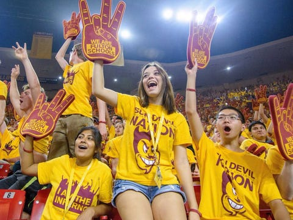

Athletic student fees are a significant source of revenue for college athletic programs. The total revenue generated by FBS in 2022 is estimated at $10.07706 billion. Student fees account for 6% of that total, amounting to $612.49 million. The FBS represents the highest level of Division I athletic programs in college football, comprising the Power 5 conferences: the Atlantic Coast Conference (ACC), the Big Ten Conference (Big Ten), the Big 12 Conference (Big 12), the Pacific-12 Conference (Pac-12), and the Southeastern Conference (SEC). The Power Five consists of the five most notable and highest-earning athletic conferences in college football. Comparing data on athletic student fees for Power 5 schools in 2017 and 2022, it is noted that in 2017, Power 5 schools generated $127,091,649 in revenue solely from student fees. In 2022, this figure increased to $134,164,690, reflecting a 1.05% growth in student fee profits over the six-year period.
The data includes private institutions but does not give any information on the student fees they have due to them not being given to the public. Those schools are Boston College, Duke University, Northwestern University, Stanford University, Syracuse University, Texas Christian University, University of Miami, University of Notre Dame, Vanderbilt University, and Wake Forest University.
Many colleges charge students a fee in their overall tuition that goes to the athletic department. This was part of Title IX. It was mandated by the Board of Regents in 1980 to help guarantee adherence to Title IX. Some schools charge students per semester while others charge per year.
They are used to support the Athletics department. They are also used to fund student tickets. The fees are added to other revenues and are distributed to various Athletic programs and services. Some schools have these fees and offer free student tickets for all of their teams including football and basketball. While others charge students for tickets. Many schools benefit from this because they do not make rough revenue from ticket sales and donations.
The ACC received the most money from athletic student fees in 2017 and 2022 among the Power 5 schools. The ACC has six institutions that are private and, therefore, do not disclose information regarding revenue and expenses.
In the ACC conference, the University of Virginia generated the most revenue from the athletic student fee in both 2017 and 2022, despite ranking 8th in the ACC for enrollment. One reason for their high fee revenue is that they charge students $720 per year. The fee is applied to every undergraduate and graduate student, granting them free entry to all athletic games.
Florida State University ranks third in the ACC for revenue from the athletic student fee. They received over $8 million last year just from the fee. They charge students $7.90 per credit. If the average student takes 15 credits, they end up paying $118.5 per semester for the fee.
Senior at Florida State University, Laine Nuessle, explained that athletics are a major part of the school, and she doesn’t mind supporting athletics, but it should be optional for students who want to contribute.
Tickets are free for students at all sporting events, but for football and basketball, not every student can attend every game. There is a weighted lottery to determine ticket distribution for the games.
The Big Ten conference receives the second most money from athletic student fees among the Power 5 conferences. In 2017 they made $27,693,385 from the fees and in 2022 they made $28,762,028.
Within the Big Ten Conference, the University of Maryland ranks highest in revenue for athletic student fees. In 2017, they received $12,036,503, while in 2022, they received $11,963,920. Per semester, full-time students are charged $199.50, while students who take under 9 credits per semester are charged $66.50. This includes student-athletes. Due to this charge, students have free access to the games of all 20 sports teams. To receive tickets, students must claim them two weeks in advance. Football and basketball operate on a first-come, first-served basis. For football, there are two sections for student seating: one in the lower bowl, which holds around 12,000 students, and the other in the upper level, which holds roughly 3,000 students.
Strategic Communications Officer and Associate Athletic Director, Jason Yellin discussed that for the athletic department at Maryland, it is beneficial.
“It's basically guaranteed money for, whether it be the Athletic Department, the Student Union, the Recreational building. You're guaranteed to have this money that comes in through these fees that are charged to the students who attend the university.” Said Yellin.
He emphasized that this certainty in revenue helps the university plan its budget effectively. Yellin also highlighted that this makes the university more desirable as a workplace. For the athletic department, people want to come and work for them because they know for certain that they have the revenue.
Students at the university also see this as a plus. Junior Lily Hagopain expressed that Maryland is one of the only Big Ten schools that lets students go to the games for free. She mentioned that it contributed to her college experience.
The Pac-12 ranks third in the Power 5 for revenue from athletic student fees. In 2017, they received $25,410,718, and in 2022, the amount increased to $29,446,934 from the fees. The conference has 12 schools.
Arizona State University makes up almost half of the revenue that the Pac-12 generates from athletic student fees. In 2017, they received $10,805,444, and in 2022, the amount increased to $11,661,761. Per semester, they charge students $75. This, in return, allows them free attendance at all sporting events. They charge less than most schools but generate substantial revenue from the fees because their enrollment is very high. In 2022, they had 79,232 students enrolled.
The Big 12 conference does not nearly generate as much revenue from athletic student fees as the Big Ten, the ACC, and the Pac-12. In 2017, they received $13,999,958. However, in 2022, their revenue from the fee dropped drastically to $5,310,622. Texas Tech University, Kansas State University, and the University of Kansas all eliminated the fee, resulting in no revenue from student fees in 2022.
The University of West Virginia generates the most revenue from the fees within the Big 12, although they do not disclose how much each student pays. Students do get to attend athletic games for free. They have to request tickets to football and basketball games in advance.
The Southeastern Conference is different from the others. They generate a significant portion of their overall revenue from football and donations. In 2017, all 14 schools combined made $8,818,721 from athletic student fees, and in 2022, the total increased to $11,846,182. Only three schools in this conference have the fee: Auburn University, the University of Georgia, and the University of Mississippi.
Auburn University was the highest in the SEC. In 2017, they made $3,633,521 from athletic student fees, and in 2022, the amount increased to $6,403,602. They have athletic student fees, but the university does not disclose the amount they charge students. Additionally, they charge students for football games. Students have the option of purchasing packages for specific games, where they pay a certain amount for certain games. Transfer students or freshmen enter a lottery for the games and still have to pay. To get tickets, students have to register for season tickets in June, while those in the lottery have to wait until July.